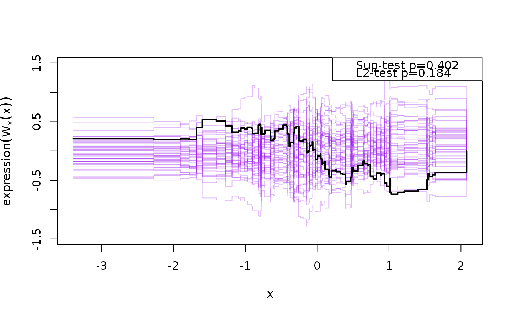
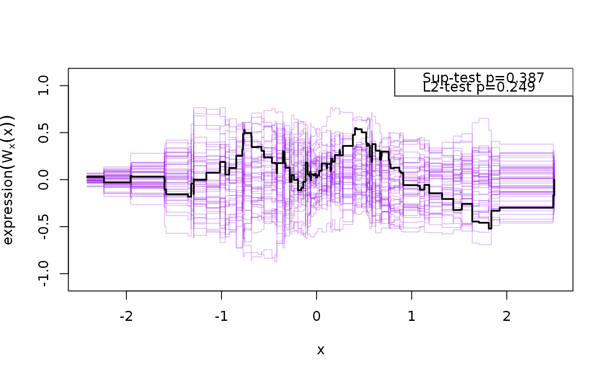

cumres.lvmfit.RdCalculates GoF statistics based on cumulative residual processes for
structural equation models fitted with the lava package.
# S3 method for lvmfit cumres( model, y, x, full = FALSE, data = model.frame(model), p, R = 1000, b = 0, plots = min(R, 50), ... )
| model |
|
|---|---|
| y | A formula specifying the association to be checked. Alternatively the outcome specified as a function or a string with the name of the outcome in the model. |
| x | Predictor. A function, vector or character |
| full | If FALSE the prediction, Pr, of the variable that are ordered after is only calculated based on the conditional distribution given covariates. If TRUE the conditional expectation is based on the largest set of covariates and endogenous variables such that the residual and Pr are uncorrelated. |
| data | data.frame (default is the model.frame of the model) |
| p | Optional parameter vector |
| R | Number of processes to simulate |
| b | Moving average parameter |
| plots | Number of processes to save for use with the plot method |
| ... | Additional arguments parsed on to lower-level functions |
Returns a cumres object with associated
plot,print,coef methods
With y and x given as functions the user can decide which
variables to use in the prediction of the outcome and predictor (use the
predict method as below).
B.N. Sanchez and E. A. Houseman and L. M. Ryan (2009) Residual-Based Diagnostics for Structural Equation Models. Biometrics Volume 65 (1), pp 104-115.
Klaus K. Holst
# \donttest{ library(lava) m <- lvm(list(c(y1,y2,y3)~eta,eta~x)); latent(m) <- ~eta ## simulate some data with non-linear covariate effect functional(m,eta~x) <- function(x) 0.3*x^2 d <- sim(m,100) e <- estimate(m,d) ## Checking the functional form of eta on x g <- cumres(e,eta~x,R=1000)#>plot(g)x <- function(p) predict(e,x=~y2+y3,p=p)[,"eta"] ## Checking the functional form of y1 on eta cumres(e,y1~eta,R=1000)#> #> p-value(Sup) p-value(L2) #> eta 0.289 0.141 #> #> Based on 1000 realizations.# }